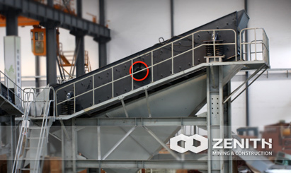
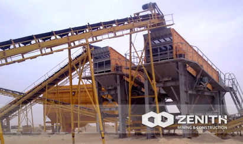
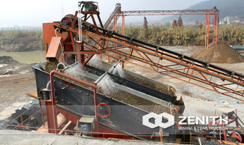
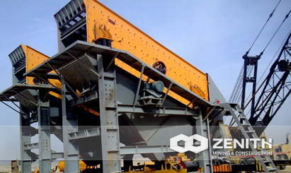

- 
- 
- 
- 
YK Vibrating Screen
YK Vibrating Screen is widely used to separate materials into various size for further processing. The vibrating screen is also used as a supporting machine in the stone crushing plant, or for end use, of course, that depends on client's needs.
The material is separated by passing it through a vibrating "screen box" which has a number of different sized screens, or meshes, which the material falls through like a sieve, the material falls onto attached conveyors which stock pile the end products. The end products can then be used in the building and construction industries.
YK Vibrating Screen application
Zenith's vibrating screen is widely used for grading and screening materials in the following fields: minerals, quarry, building materials, water conservancy and hydropower, transportation, chemical industry, smelting and so on. As for the processing materials, Zenith's vibrating screen can be used to screen the calcite, talcum, ceramic, bauxite, manganese ore, iron ore, copper ore, phosphate rock, clay, gypsum, graphite, silicon carbide, thermal insulation materials and other materials.
Working Principle of YK Vibrating Screen
Motor force drives the screen to vibrating motion. Meanwhile, the amplitude of eccentric shaft should be adjusted, so the vibrating screen moves like a circle quickly. And materials in the screen case can be separated and screened from the sieve pore in this process.
YK Vibrating Screen Benefits and advantages
- High screening efficiency.
- High capacity and reliability.
- Long bearing lifetime.
- Easy maintenance.
- Special eccentric shaft create circular throw action.
- Pivoting motor bases.
The tacnology data
| Model | Screen Size (mm) | Layers | Mesh Size (mm) | Feeding Size (mm) | Capacity (t/h) | Power (kw) | Motor Model | REV (r/min) | Amptude (mm) | Angle (℃) | Machine Size (mm) |
|---|---|---|---|---|---|---|---|---|---|---|---|
| 2YK1237 | 1200×3700 | 2 | 3-50 | ≤200 | 7.5-80 | 4-15 | Y160L-4/15 | 970 | 8 | 20 | 4010×2250×2660 |
| 3YK1237 | 1200×3700 | 3 | 3-50 | ≤200 | 7.5-80 | 4-15 | Y160L-4/15 | 970 | 8 | 20 | 4010×2250×3140 |
| 2YK1548 | 1500×4800 | 2 | 5-50 | ≤400 | 50-208 | 4-15 | Y160L-4/15 | 970 | 8 | 20 | 5120×2590×3060 |
| 3YK1548 | 1500×4800 | 3 | 5-50 | ≤400 | 50-250 | 4-15 | Y160L-4/15 | 970 | 8 | 20 | 5120×2590×3540 |
| 2YK1848 | 1800×4800 | 2 | 5-80 | ≤400 | 50-260 | 4-18.5 | Y180M-4/18.5 | 970 | 8 | 20 | 5120×2950×3060 |
| 3YK1848 | 1800×4800 | 3 | 5-80 | ≤400 | 50-300 | 4-18.5 | Y180M-4/18.5 | 970 | 8 | 20 | 5120×2950×3540 |
| 2YK1860 | 1800×6000 | 2 | 5-80 | ≤400 | 50-300 | 4-18.5 | Y180M-4/18.5 | 970 | 8 | 20 | 6260×2950×3480 |
| 3YK1860 | 1800×6000 | 3 | 5-80 | ≤400 | 50-350 | 4-22 | Y180L-4/22 | 970 | 8 | 20 | 6260×2990×3960 |
| 2YK2160 | 2100×6000 | 2 | 5-150 | ≤400 | 100-500 | 4-22 | Y180L-4/22 | 730 | 6-8 | 20 | 6270×3410×3670 |
| 3YK2160 | 2100×6000 | 3 | 5-100 | ≤400 | 100-500 | 4-30 | Y200L-4/30 | 730 | 6-8 | 20 | 6270×3470×4100 |
| 2YK2460 | 2400×6000 | 2 | 5-150 | ≤400 | 150-700 | 4-37 | Y225S-4/37 | 730 | 6-8 | 20 | 6270×3770×3610 |
| 3YK2460 | 2400×6000 | 3 | 5-150 | ≤400 | 150-700 | 4-37 | Y225S-4/37 | 730 | 6-8 | 20 | 6270×3790×4100 |